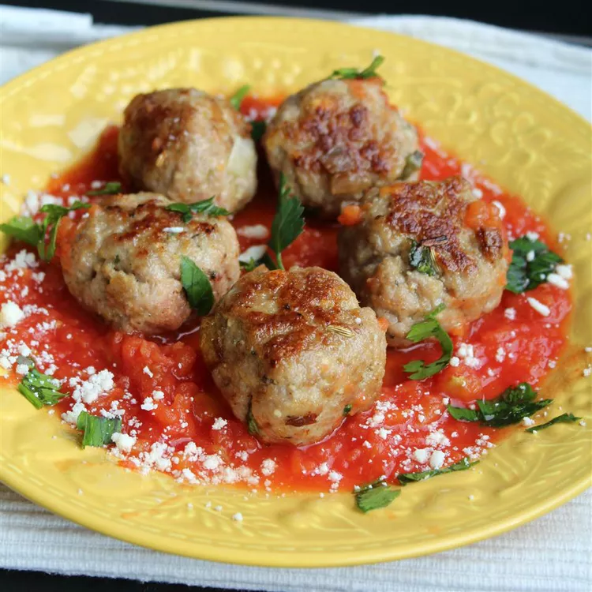

Gluten-free Turkey Meatballs

Description
My mom developed this recipe after many attempts at gluten-free meatballs. We now have a delicious and healthy way to eat a food we love!
Ingredients
- ¾ pound ground turkey
- ½ pound chicken sausage, casings removed
- ⅔ cup gluten-free bread crumbs
- 3 tablespoons chopped fresh basil
- 3 tablespoons milk
- 2 teaspoons minced garlic
- ¼ cup grated Parmesan cheese
- 1 teaspoon kosher salt
- ½ teaspoon ground black pepper
- 1 egg, lightly beaten
Steps
- Preheat oven to 350 degrees F (175 degrees C). Line a baking sheet with parchment paper.
- Combine ground turkey, chicken sausage, bread crumbs, basil, milk, garlic, Parmesan cheese, kosher salt, and black pepper in a bowl; mix gently with a fork. Drop mixture, about 1 1/4-inch diameter per meatball, onto the prepared baking sheet using a spoon.
- Bake in the preheated oven until cooked through and lightly browned, about 30 minutes. An instant-read thermometer inserted into the center should read at least 165 degrees F (74 degrees C).
Return to main page